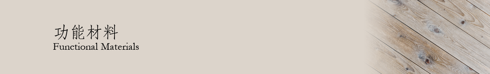

橡胶与乳胶
橡胶是一种具有可逆形变的高弹性聚合物材料，在室温下富有弹性，在很小的外力作用下能产生较大形变，除去外力后能恢复原状。
天然橡胶，即常见的乳胶，由橡胶树树皮韧皮部乳汁管所分泌的胶乳，经净化、加酸凝固、干燥等工艺后形成。天然橡胶中91%~94%为橡胶烃，是一种以顺-1,4-聚异戊二烯为主要成分的天然高分子化合物。天然橡胶双键多，饱和度较低，易于其他化学物质反应而老化，因此需要添加防老化剂。由于分子松散、交联度低，天然橡胶在常温下具有很好的弹性。天然橡胶有较好的耐碱性能，但不耐浓强酸。图为天然橡胶的结构。
由于天然橡胶产量低、缺点明显，合成橡胶应运而生。1839年，美国人古德伊尔(Charles Goodyear)成功地将天然橡胶进行了硫化，开启了合成橡胶的历史。对天然橡胶进行硫化后，聚异戊二烯分子之间相互交联，使橡胶结构牢固稳定，并消除了易于发生化学反应的双键，使橡胶不易老化。目前的合成橡胶主要种类有顺丁橡胶（与天然橡胶结构类似）、丁苯橡胶、丁腈橡胶、氯丁橡胶、异戊橡胶等，均为在主链以四个碳原子上为单位的高分子聚合物，广泛用于生活生产中。
文章录入：梅云皓 责任编辑：梅云皓